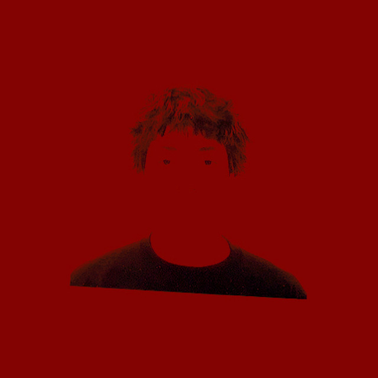

Sergio is a First-Generation Latino-American Writer and Creative. His work blends introspection with cultural memory, often guided by quiet moments and the tension between dual identities. He is drawn to the intricacy in perception and interpretation, and believes the most honest creative work often begins where language fails.
With roots in marketing, film, and design, Sergio explores identity, desire, and dissonance across mediums—always chasing a specific feeling rather than form. Emotional, layered, and certain, shaped by a deep commitment to stillness, truth, and tonal clarity.
Las Vegas
